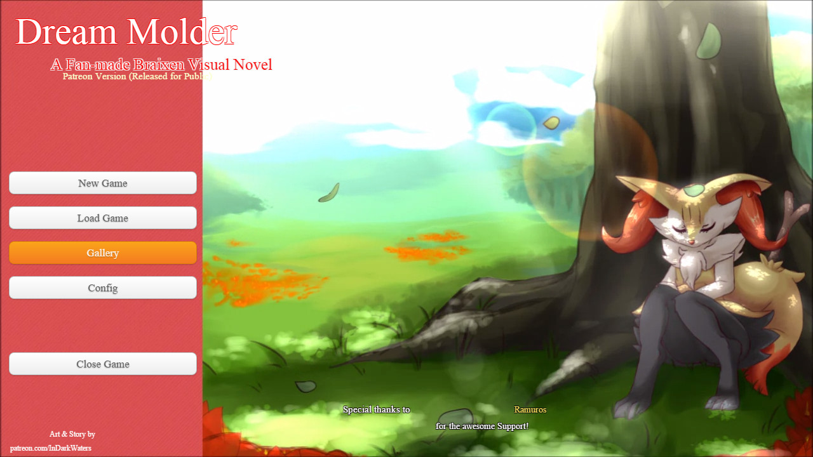

> Dream Molder Demo
Links & Contact
| Dream Molder Demo | Info: | |||||||
|---|---|---|---|---|---|---|---|---|
|  |
First few test releases of Dream Molder with a short part take from the story and extra h-scenes that will not be in the full version. Will be remade with new engine and grafics from the main game in the future, which is why bug fixes won't be made until then. Story Summary: The Player and his childhood friend found a wounded Fennekin that they nursed back to health and named Fia. Growing up with it they had all kind of fun until the Player had to move away, leaving Fia with his childhood friend. Now, years later that Fennekin has already evolved into a Braixen and needs a new place to stay. Taking Fia in despite his families discomfort towards her he starts having weird dreams and finds out about a secret revolving around them... Play latest version online here: Browser Version 0.4 NSFW! (The browser version is only here for convenience sake and not fully testet. Keep in mind that it might not work on every device and have bugs that could hinder game progress or presentation.) (Might also use cookies to save your games progress.) |
|||||||
| Version | Download | File Size | Release Date | |||||
| NSFW! Dream Molder Demo 0.4 | Win64 (Mirror 1) (Mirror 2) | 193 Mb | 01.01.2018 | Latest Version | ||||